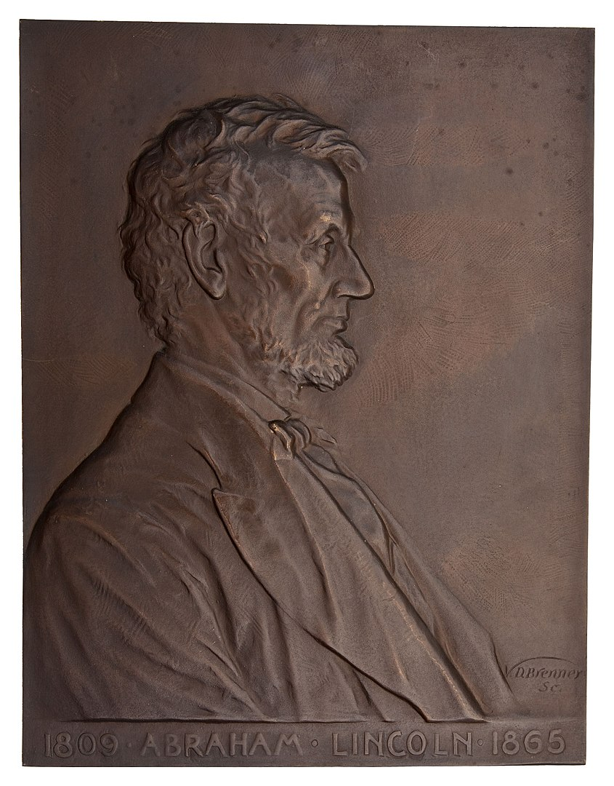
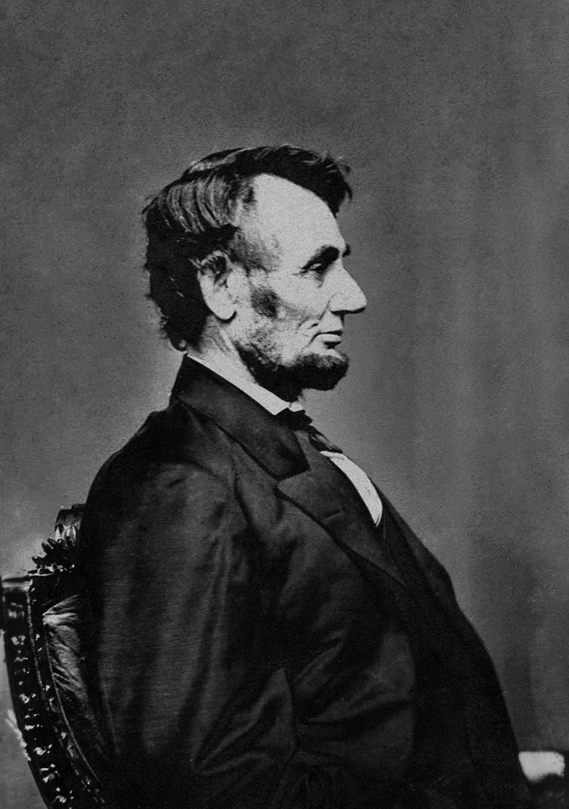
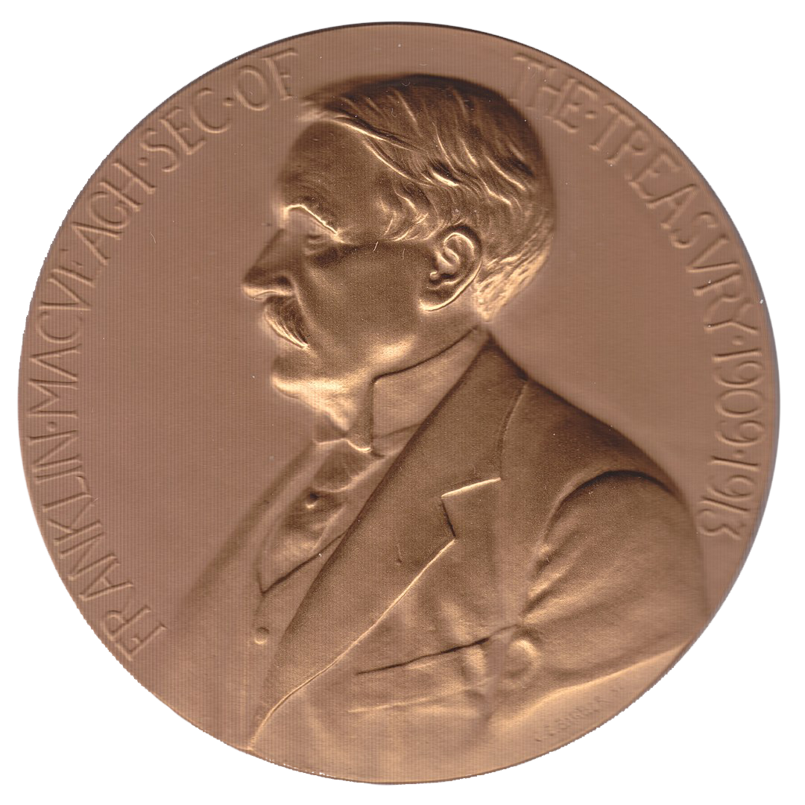
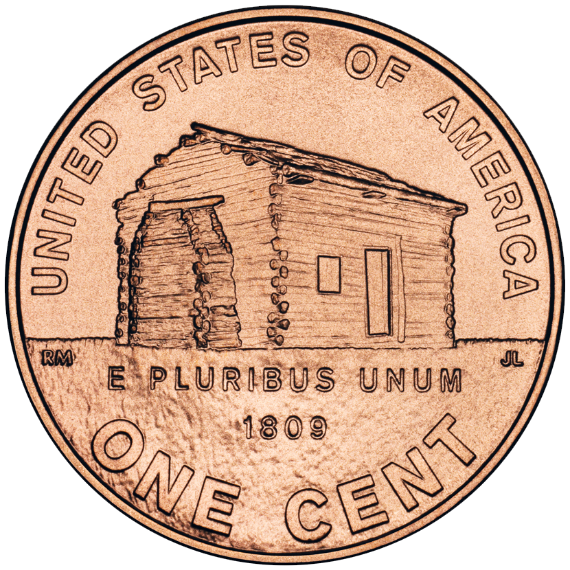

The Lincoln cent (sometimes called the Lincoln penny) is a one-cent coin that has been struck by the United States Mint since 1909. The obverse or heads side was designed by Victor David Brenner, as was the original reverse, depicting two stalks of wheat (thus "wheat pennies", struck 1909–1958). The coin has seen several reverse, or tails, designs and now bears one by Lyndall Bass depicting a Union shield. All coins struck by the United States government with a value of 1/100 of a dollar are called cents because the United States has always minted coins using decimals. The penny nickname is a carryover from the coins struck in England, which went to decimals for coins in 1971.
In 1905, sculptor Augustus Saint-Gaudens was hired by the Mint to redesign the cent and the four gold coins, which did not require congressional approval. Two of Saint-Gaudens's proposed designs for the cent were eventually adapted for the gold pieces, but Saint-Gaudens died in August 1907 before submitting additional designs for the cent. In January 1909, the Mint engaged Brenner to design a cent depicting the late president Abraham Lincoln, 1909 being the centennial year of his birth. It was the first widely circulating design of a U.S. president on a coin, an idea that had been seen as too monarchical in the past, namely by George Washington. Nevertheless, Brenner's design was eventually approved, and the new coins were issued to great public interest on August 2, 1909.
Brenner's initials (VDB), on the reverse at its base, were deemed too prominent once the coins were issued, and were removed within days of the release. The initials were restored, this time smaller, on Lincoln's shoulder, in 1918. Originally struck in 95% copper, the cent coin was changed for one year to steel in 1943 as copper was needed to aid in the war effort. The mint then reverted to 95% copper until 1982, when inflation made copper too expensive and the composition was changed to zinc with an outer copper layer. Brenner's wheat reverse was replaced in 1959 by a depiction of the Lincoln Memorial designed by Frank Gasparro, for the sesquicentennial of his birth year. The Lincoln Memorial reverse was itself replaced in 2009 by four commemorative designs marking the bicentennial of Lincoln's birth. Beginning in 2010, Bass's shield design was coined.
In 1904, President Theodore Roosevelt wrote to his Secretary of the Treasury, Leslie Mortier Shaw, complaining that U.S. coinage lacked artistic merit, and enquiring if it would be possible to engage a private artist, such as sculptor Augustus Saint-Gaudens, to prepare new coin designs. At Roosevelt's instructions, the Mint hired Saint-Gaudens to redesign the cent and the four gold pieces: the double eagle ($20), eagle ($10), half eagle ($5), and quarter eagle ($2.50). As the designs of those pieces had remained the same for 25 years, they could be changed without an act of Congress. The Indian Head cent, which the Lincoln cent replaced, had been introduced in 1859.
Saint-Gaudens originally conceived a flying eagle design for the cent, but at Roosevelt's request, developed it for the double eagle after learning that by law, an eagle could not appear on the cent. Writer and friend Witter Bynner recalled that in January 1907, Saint-Gaudens was seriously ill with cancer, and was carried to his studio for ten minutes a day to critique the work of his assistants on current projects, including the cent. Saint-Gaudens sent Roosevelt a design in February for the obverse of the cent showing a figure of Liberty. Roosevelt suggested the addition of a Native American war bonnet, stating, "I don't see why we should not have a conventional head-dress of purely American type for the Liberty figure." In May 1907, Roosevelt instructed that the Indian design be developed for the eagles instead. Saint-Gaudens was by then in declining health; he died on August 3, 1907, without having submitted another design for the cent.
With the redesign of the four gold denominations completed by 1908, Roosevelt turned his attention to the cent. The centennial of the birth of assassinated president Abraham Lincoln would occur in February 1909, and large numbers of privately manufactured souvenirs were already being issued. Many citizens had written to the Treasury Department, proposing a Lincoln coin, and Roosevelt was interested in honoring his fellow Republican. This was a break with previous American numismatic tradition; before the Lincoln cent, no regularly circulating U.S. coin had featured an actual person (as opposed to idealized personifications, as of "liberty"). Many writers had suggested a Lincoln half dollar, but that coin's design had been changed in 1892 and could not yet be altered without congressional approval. By then a lame duck in office, Roosevelt was reluctant to involve Congress.
Brenner's obverse design closely follows a profile of Lincoln he had used in other work, such as the desk plaque he made for the Gorham Manufacturing Company in 1907. Numismatic historian Roger Burdette suggests that Brenner based his work on an 1864 photograph of Lincoln taken at Mathew Brady's studio by one of his assistants. However, Burdette adds that in an April 1, 1909 letter, Brenner mentioned that in producing the design, he envisioned Lincoln reading to a child, when the sculptor felt Lincoln would be at his brightest. This suggests that Brenner may have drawn inspiration from the well-known Brady photograph of Lincoln with his son, Tad. In a 2012 study published in Coin World, numismatic historian Fred Reed suggests that Brenner's Lincoln work was based on a Brady portrait of Lincoln in right profile which was taken on the same day as the picture with his son (there were several photos taken at this sitting). As the photograph in question only showed Lincoln's head and shoulders, Reed indicates that Brenner obtained additional detail from an 1860 campaign photograph of a beardless Lincoln.
On January 18, 1909, Brenner submitted models to the Mint with a Lincoln profile on the obverse, and a reverse design very similar to that on the then-current French silver coins, showing a tree branch. He also proposed designs for a Lincoln half dollar, with the late president to appear on one side, and a standing Liberty design—almost identical to the obverse of the same French coins. Leach replied on February 2 that no change to the half dollar could be made without congressional approval. By February 9, Leach had discovered the origin of the branch design—although numismatic historian Don Taxay notes that it is odd Leach had not discovered the source of the standing Liberty design, given that they were on opposite sides of the same French coins. Leach did not confront the sculptor with the artistic borrowing, but instead simply ruled out the submitted designs as unsuitable for the reverse of the cent. He urged the sculptor to prepare a simple design, bearing the denomination, the country's name, and the motto "E pluribus unum". Brenner worked quickly, and on February 17, delivered models for both obverse and reverse similar to the eventual coin, though with a somewhat larger bust of Lincoln, and the motto "In God We Trust" omitted. As a design element on the reverse, Brenner used two ears of durum wheat. The designs were shown to President Roosevelt, who approved them although Roosevelt required "UNITED", which Brenner had spelled "VNITED", to be spelled in the conventional way. After Leach examined the models, he objected to the fact that Brenner had put his full surname on the obverse. Brenner wrote in return, "I shall take it out and put it in small letters on the reverse."
On March 4, 1909, the day on which Roosevelt left office, replaced by William Howard Taft, Brenner met with Mint Engraver Charles E. Barber in Philadelphia. Barber had written to Leach, suggesting that Brenner's designs would have to be modified to be suitable for coinage. On March 15, Brenner wrote to Leach stating that Barber seemed in no hurry to have the new coins produced. Brenner also complained that the Mint was losing detail as it reduced the large models to coin-sized hubs. Barber had been stung by criticism that he had lost detail in this way with the new gold coins, and he raised no objection to having the reductions done by an outside silversmith. After several hubs were prepared by the Medallic Art Company of New York, Barber sank a master die and sent it to Brenner for retouching.
Patterns were prepared from the dies, but Barber and Leach were unhappy with the pieces. On May 22, Leach wrote to Brenner, I have to inform you that I was not satisfied with the first proof of the Lincoln cent. I found that you had not dropped the Lincoln portrait down so that the head would come nearer the center of the coin ... Therefore I had Mr. Barber make me a proof of this change, and as this left so much blank space over the top we concluded that it would be better to put on the motto, "In God We Trust". This change has made a marked improvement in the appearance of the coin.
On May 26, samples of the new coin with and without the motto were shown to President Taft, who selected the mottoed version. The coin was formally approved by Secretary of the Treasury Franklin MacVeagh on July 14 and a release date of August 2, 1909, was set.
The Philadelphia Mint struck 20,000,000 of the new coin even before its design was made official by Secretary MacVeagh. Dies for the San Francisco Mint, prepared at Philadelphia, were ready for shipment to San Francisco on June 22.
There was intense public interest in the new cents, especially since the Mint had not permitted images of the new coin to be printed in the newspapers. The Lincoln craze sparked by the centennial had not yet subsided, and there was widespread speculation about the coin's design. The Mint decided to plan for a simultaneous release of the coin across the United States on August 2, and Treasury Department branches were sent what were thought to be adequate supplies.
On the morning of August 2, 1909, long lines formed outside Treasury facilities across the United States. Some early applicants were able to obtain all the coins they wanted, but soon the pieces were rationed: applicants at the New York Sub-Treasury were allowed 100 pieces per person; those who sought the coins at the Philadelphia Mint were allowed only two each. Coins passed on the secondary market outside the Philadelphia Mint for a quarter each until prices settled down to five cents per new penny. Many newsboys were among those who profited from the new coins; crowds gathered around the windows where the coins were for sale in Washington until order was restored.
Brenner's initials, which he had placed at the base of the reverse, immediately became a source of controversy—on the afternoon of August 2, The Washington Star queried the Treasury as to the initials. Quotes appeared in the papers from (possibly invented) unnamed Treasury officials, opining that the coins were illegal because of the initials, which were seen as advertising. On August 5, Secretary MacVeagh ordered coinage of the cent suspended until the coins could be struck with an inconspicuous "B" for Brenner on the coin. However, removing the initials and striking new pieces with no initials would lead to a three-day delay in coinage; effacing the initials and inserting an initial "B" would cause a 14-day delay. Assistant Treasury Secretary Eliot Norton, after meeting with Barber, ordered that the coins be struck with no initial. Treasury Department Solicitor Maurice O'Connell held that the exclusion of the initials did not constitute a design change which could only have been implemented by waiting 25 years or obtaining congressional approval. Barber also opposed retaining a single initial "B", fearing that as he had used an identical initial on his Barber coinage, the new coin would be deemed to be his work, and, according to Norton, "He is not willing to be held personally responsible for the Lincoln penny which he has always opposed and does not regard as a successful coin."
Brenner objected to the removal of his initials, but his protests were to no avail. The cents without Brenner's initials were in production by August 12, 1909. During the halt, owners of vending and slot machines complained that the new pennies were too thick to fit in their machines. Barber was recalled from his vacation in Cape May, New Jersey, to deal with the complaints. Leach ordered changes in the new cent, but Barber resisted Leach's orders, and was in the end successful—vending and slot machine manufacturers modified their machines to suit the new cent, rather than the other way around. By the end of 1909, supply of the new cents was finally up to demand.
Burdette suggests that had MacVeagh been more experienced in his job, he would have been less concerned about the initials. Saint-Gaudens had prominently signed his double eagle on the obverse, and George T. Morgan's design for the silver dollar contained an "M" marked on both sides of the piece.
Cents with and without Brenner's initials were struck at both Philadelphia and San Francisco in 1909. Coins struck at Philadelphia bear no mintmark; those struck at San Francisco were marked with an S. While almost 28 million Philadelphia VDB cents were struck, making them quite common, the 1909-S with Brenner's initials (commonly called the 1909-S VDB) is the rarest Lincoln cent by date and mintmark, with only 484,000 released for circulation. In 1911, the Denver Mint began striking cents with the mintmark D, and in most years in the following decades, all three mints struck cents. In 1916, Barber modified the design, causing Lincoln's cheek and coat to appear less wrinkled. This modification was done to extend die life.
In 1917, a year which saw Barber's death in office at age 77, the wartime economy caused a shortage of cents. At this time, the Lincoln cent had not yet become dominant in circulation; four-fifths of the cents in circulation were of the older Indian Head design. Demand for the cent continued to increase when a luxury tax was instituted, and cents were needed to make change. In 1918, Brenner's initials were restored to the coin, appearing where Lincoln's shoulder is cut off by the rim of the coin.
The recession year of 1922 saw a lower-than-usual demand for coins in commerce, and few cents were coined. At the time, dies were only made at Philadelphia; the Denver Mint had outstanding orders for cents that year. When Denver applied to the Philadelphia Mint for more dies (cents were not struck at either Philadelphia or San Francisco that year), it was told that the Philadelphia Mint could supply no more cent dies, as it was fully engaged in preparing dies for the Peace dollar. Denver filled its orders by striking with a worn-out obverse die, which impressed the design fainter than usual. On many strikes, the mintmark on the die filled with oil and dirt, producing coins on which the mintmark does not appear, or appears only faintly. The 1922 plain piece is another relatively rare one in the Lincoln cent series.
When the 25-year period during which the Lincoln cent could not be changed without congressional approval expired, there was no interest in replacing the design as the coin had remained popular. Beginning in 1936, proof coins were struck for collectors for the first time since 1916. Made only at Philadelphia, these pieces were coined from dies polished to mirror smoothness.
With the US entry into World War II in 1941, copper and tin, which were both used in the cent, were in short supply. Experiments were carried out by several corporations under contract from the Mint; they tested various metallic and non-metallic substances, including fiber, tempered glass, and several types of plastic. These experiments used various designs, since actual Lincoln cent dies could not leave government custody. As the experiments proceeded, production of bronze cents was cut back drastically in July 1942, and ceased in December. On December 18, 1942, Congress gave the mint authorization to change the composition of the cent for a three-year period, and five days later, Treasury Secretary Henry Morgenthau announced that the coin would be made out of zinc-coated steel. Zinc and iron form an electromagnetic "couple"; the two metals soon corrode when in contact with each other in a damp atmosphere. The public soon complained that the new coins were becoming spotted and stained. Another common complaint was confusion with the dime, and some letters suggested that a hole be punched in the center of the new coins. Morgenthau responded that the new pieces would soon become darker, and that the Mint would be willing to darken them if it could figure out a suitable process.
In December 1943, the Treasury Department announced that the steel cent would be discontinued after 1943, to be replaced with coins containing 95% copper and 5% zinc (pre-1943 cents contained the same percentage of copper but might also contain tin in place of some of the zinc). The Treasury also stated that some of the metal for the new coins would be obtained by melting down small arms ammunition shells. However, numismatic writer Shane Anderson, in his study of the Lincoln cent, doubts that any shells were melted down, except perhaps ceremonially. After the war, the Treasury quietly retired as many steel cents as it could from circulation, while denying it was doing so—no public admission of the program was made until 1959, as the Treasury feared that were it publicly known, the coins would be hoarded. A few 1943 bronze cents and 1944 steel cents are known to exist, and they are valuable. Only one 1943-D cent in bronze is known; it sold in September 2010 for $1.7 million. One of the four known 1943-S cents in bronze was sold to Texas Rangers baseball team co-chairman Bob R. Simpson for $1 million. One 1943 cent struck in 86.41% tin and 8.37% antimony with other trace metals was discovered in 2019 by a coin collector named Manuel Houston. There are also many cents dated 1943 that were coated with copper to imitate the genuine rarity. These pieces may be distinguished from genuine off-metal strikes by the use of a magnet. The planchets from which the 1943 and 1944 off-metal strikes were coined were most likely concealed in the coining equipment and were struck when coinage resumed after year end. The cent returned to its prewar composition in 1946.
In 1952, the Mint considered replacing the Lincoln cent with a new design by Mint Chief Engraver Gilroy Roberts, but Mint officials feared that the incoming Eisenhower administration would be hostile to replacing a Republican on the cent. Several thousand 1955 pieces were struck with a doubled die, and display doubling of the date. The Mint was aware of the pieces, and knew they were somewhere within a large production lot, but opted to release them, rather than destroy the entire lot. The variety did not become widely known until several years later.
On Sunday morning, December 21, 1958, President Eisenhower's press secretary, James Hagerty, issued a press release announcing that a new reverse design for the cent would begin production on January 2, 1959. The new design, by Frank Gasparro, had been developed by the Treasury in consultation with the Lincoln Sesquicentennial Commission. Approved by the President and by Secretary of the Treasury Robert B. Anderson, the new design featured the Lincoln Memorial in Washington, D.C. The redesign came as a complete surprise, as word of the proposal had not been leaked. The coin was officially released on February 12, 1959, the 150th anniversary of Lincoln's birth, although some pieces entered circulation early.
The selected design was the result of an internal competition among the Mint's engravers. Gasparro did not go in person to see the Lincoln Memorial, a place he had never visited. According to Anderson, Gasparro created an "impressive" image of the Memorial, however, Taxay states that the design "looks at first glance like a trolley car". Numismatic historian Walter Breen describes Gasparro's design as "an artistic disaster".
There was considerable public excitement over the "small date" and "large date" 1960 and 1960-D cents, with the small dates being the rarer. The Mint feared the interior of the zero as punched into the die would break away during the coining process, giving the zero a filled-in appearance. To reduce the chance of this happening, the Mint enlarged the date. Sealed bags of 1960 cents, with a face value of $50, sold for as much as $12,000. Prices for the small date coins, of which approximately two million had been struck at Philadelphia, continued to increase until 1964, when the bubble burst. Approximately 500 million of the Denver small date (out of a total mintage of 1.5 billion) were struck, and are not particularly rare. Bowers points out that there are enough of the 1960 Philadelphia small date known to supply every member of the American Numismatic Association, and every subscriber to the major coin periodicals.
In 1964, a rise in the price of silver led to silver coins being hoarded by the public. With change short, hoarding extended to the cent, which also became scarce in circulation. Mint Director Eva Adams felt that part of the reason for the shortage was coin collectors taking pieces from circulation, and Adams ordered that mintmarks no longer appear on coins. Coins continued to be dated 1964 until the end of 1965, using authority given by the Coinage Act of 1965, and almost all 1965 cents were actually struck in 1966. The Mint began striking clad dimes and quarters, replacing the silver pieces which the public would not spend. Although coinage had been stopped at San Francisco after 1955, the California facility began to issue cents again, though without mintmarks. In 1968, mintmarks were restored to the cent. San Francisco began minting a limited number of circulation strikes (which it would cease to do after 1974) and began striking proof coins. By this time the master hub had become quite worn and Lincoln's features were becoming indistinct. For the 1969 coins a new master was produced for use in all three mints and the features were sharpened and moved further from the edge of the coin, while the lettering was broadened.
Copper prices began to rise in 1973, to such an extent that the intrinsic value of the coin approached a cent, and citizens began to hoard cents, hoping to realize a profit. The Mint decided to switch to an aluminum cent. Over a million and a half such pieces were struck in the second half of 1973, though they were dated 1974. At congressional hearings, representatives of the vending machine industry testified that aluminum cents would jam their equipment, and the Mint backed away from its proposal. Mint director Mary Brooks sought the return of samples which had been distributed to members of Congress, but 14 remained missing, with the recipients affecting not to know what had become of them. One aluminum cent was donated to the Smithsonian Institution for the National Numismatic Collection; another was reportedly found by a US Capitol Police Officer. Experiments were also conducted with bronze-clad steel cents. Slated for disposal, when a bag of them tore open before going into a smelter a few were kept by the workers. They are also considered to be illegally held government property. Recognizing that a change from the current copper composition was still inevitable, Congress passed Public Law 93-441 on October 11, 1974, declaring "[w]henever in the judgment of the Secretary of the Treasury such action is necessary to assure an adequate supply of coins to meet the national needs, he may prescribe such composition of copper and zinc in the alloy of the one-cent piece as he may deem appropriate."
In 1981, faced with another rise in the price of copper, the Mint decided to change the composition of the cent to copper-covered zinc. After contract difficulties and production delays, the first such cents were struck at the West Point Mint (without mintmark) on January 7, 1982. Denver did not convert to the new composition until October 21. A few pieces were struck by error in bronze dated 1983 and are extremely rare. A number of small changes were made to the obverse design in the 1990s and early 2000s.
The Presidential $1 Coin Act of 2005 required that the cent's reverse be redesigned for 2009, and that four designs be issued to celebrate the Abraham Lincoln Bicentennial. The coins were to be emblematic of Lincoln's early life in Kentucky and in Indiana, of his professional life in Illinois, and of his presidency. Unveiled September 22, 2008, at a ceremony held at the Lincoln Memorial, these designs were:

The law also required that collector's sets, in the same alloy used in 1909, be sold to the public.
The Presidential $1 Coin Act required that the cent, beginning in 2010, "shall bear an image emblematic of President Lincoln's preservation of the United States of America as a single and united country". On April 16, 2009, the Commission of Fine Arts (CFA) met and recommended a design that showed 13 wheat sheaves bound together with a ring symbolizing American unity as one nation. Subsequently, this design was withdrawn because it was similar to coins issued in Germany in the 1920s. The Citizens Coinage Advisory Committee (CCAC) also met and recommended a design showing a Union shield with ONE CENT superimposed in a scroll; E pluribus unum was also depicted in the upper portion of the shield.
In June 2009 the CFA met again and this time selected a design featuring a modern rendition of the American flag. As a part of the release ceremony for the last of the 2009 cents on November 12, 2009, the design for the 2010 cent was announced. The design chosen by the CCAC was the Union shield. According to the Mint, the 13 stripes on the shield "represent the states joined in one compact union to support the Federal government, represented by the horizontal bar above." The new reverse was designed by artist Lyndall Bass and sculpted by US Mint sculptor-engraver Joseph Menna. The Mint re-engraved the obverse, returning to the original 1909 galvano in preparing new dies. However, the Mint did not return to striking the pieces in the higher relief of 1909—the piece has long been struck in a much lower relief than the original pieces.
In January 2010, the new coins were released early in Puerto Rico; this was prompted by a shortage of cents on the island. Cents of the new design were officially released at a ceremony at the Abraham Lincoln Presidential Library in Springfield, Illinois, on February 11, 2010.
In early January 2017, cents bearing the current date and with the mint mark P appeared in circulation. The Mint had made no announcement of such coins, but confirmed their authenticity, stating that the coins had the mint mark to honor the Mint's 225th anniversary. All cents struck at Philadelphia in 2017 received the mint mark, but cents struck in 2018 and thereafter do not.
In February 2019, the Mint announced that the West Point Mint would strike cents with that mint's W mint mark. These are not released into circulation, but they are struck in three different finishes for three of the year's annual sets.